Nifeliz Asil
A challenging 4,099-piece 1:8 scale supercar build packed with mechanical detail, layered bodywork and a seriously impressive finished presence.
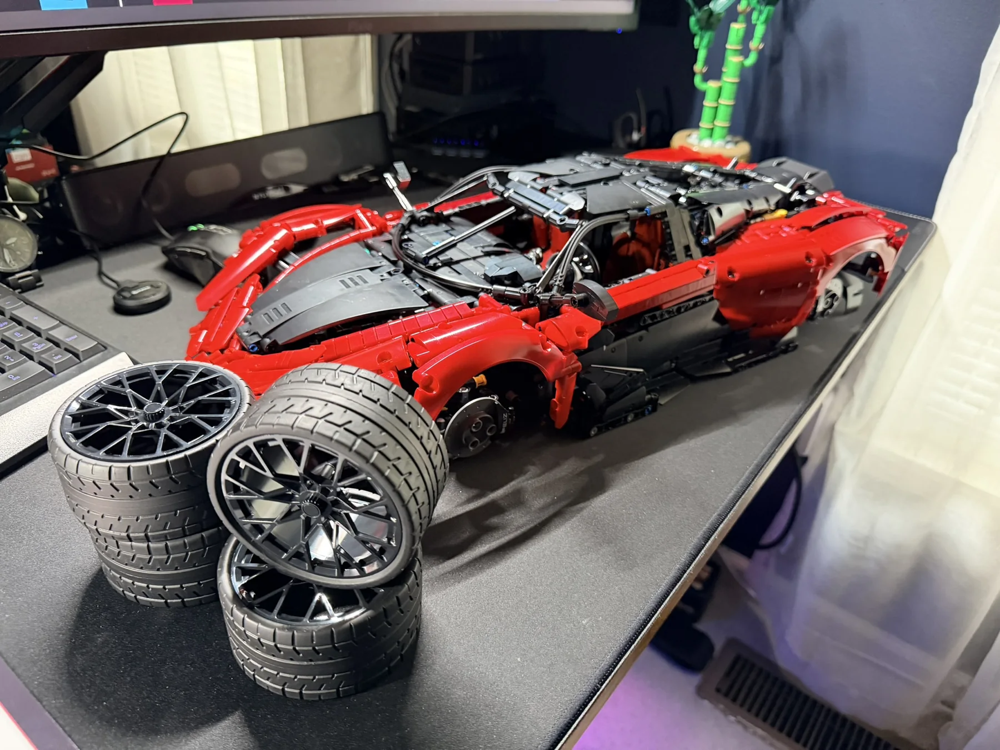
From the box to the final piece.
This one starts with a lot of parts and quickly turns into a dense Technic-style chassis. The fun is in watching the suspension, drivetrain, cockpit and bodywork gradually come together around that structure.
A serious box of bricks.
The Asil arrives as a large 1:8 scale build with 4,099 pieces. Inside, the build is divided into numerous bags with a substantial instruction book to work through.
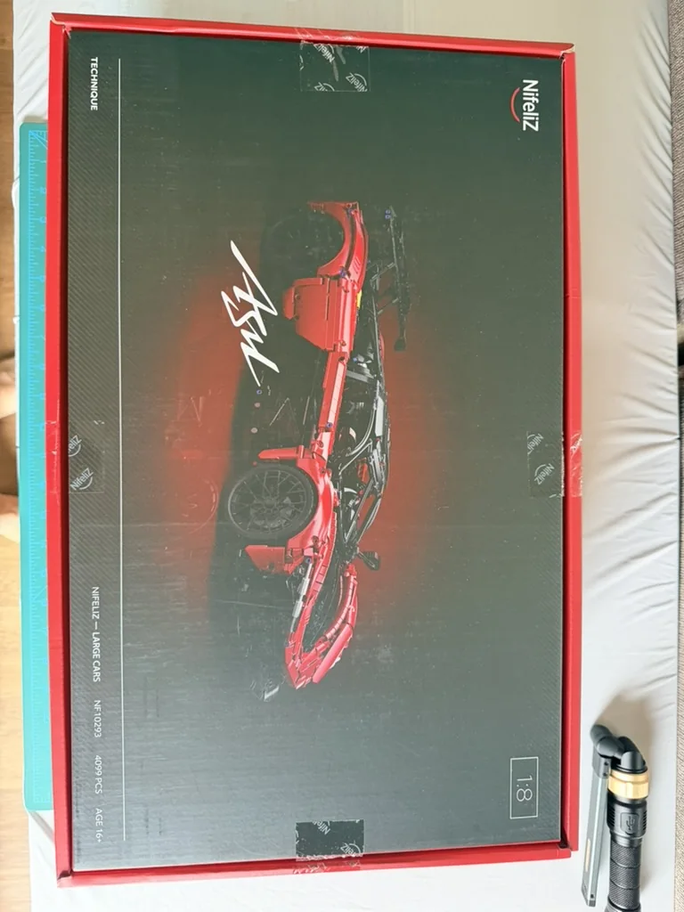
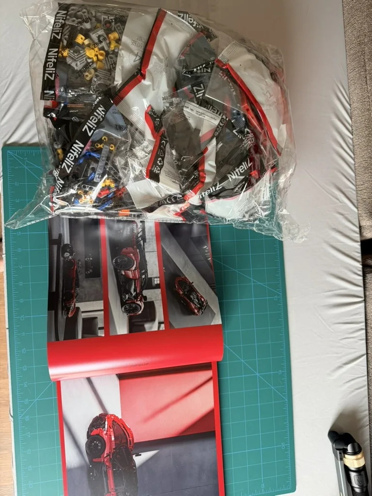
Building from the inside out.
The chassis is where the complexity really starts to show. Suspension, steering and structural bracing build up into a rigid platform long before the exterior begins to resemble the finished car.
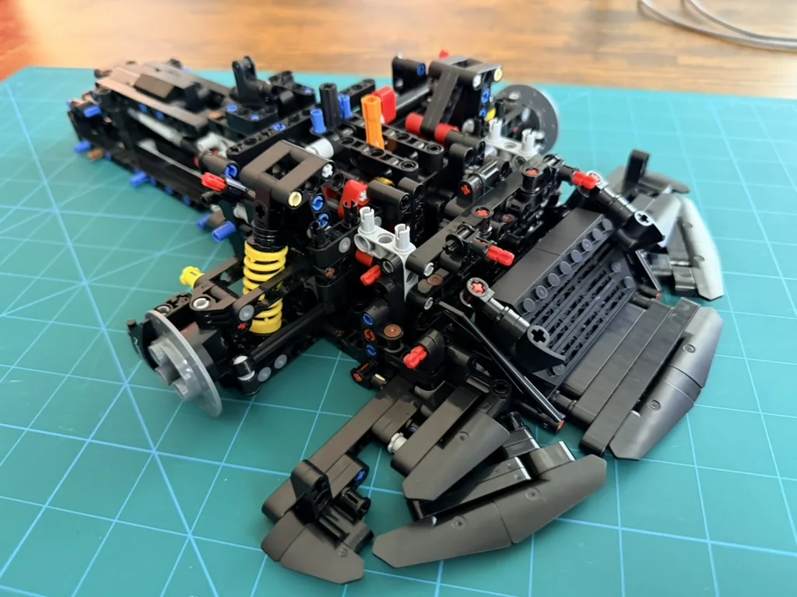
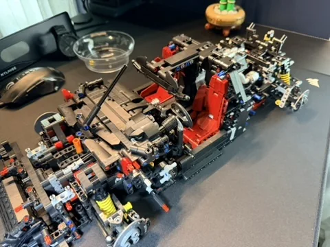
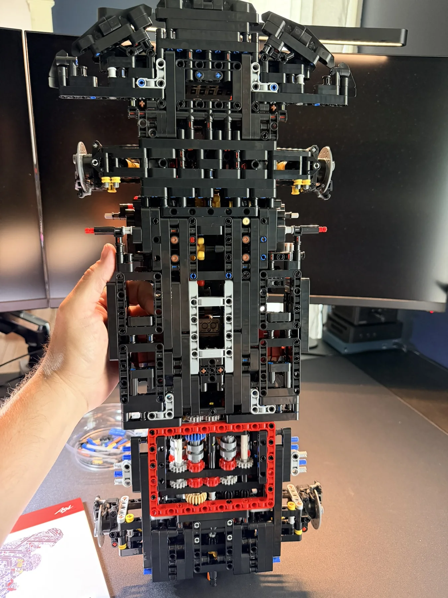
Mechanical details everywhere.
The cockpit and engine become focal points as the build progresses. These are the areas that make the model rewarding to explore even before the body panels go on.
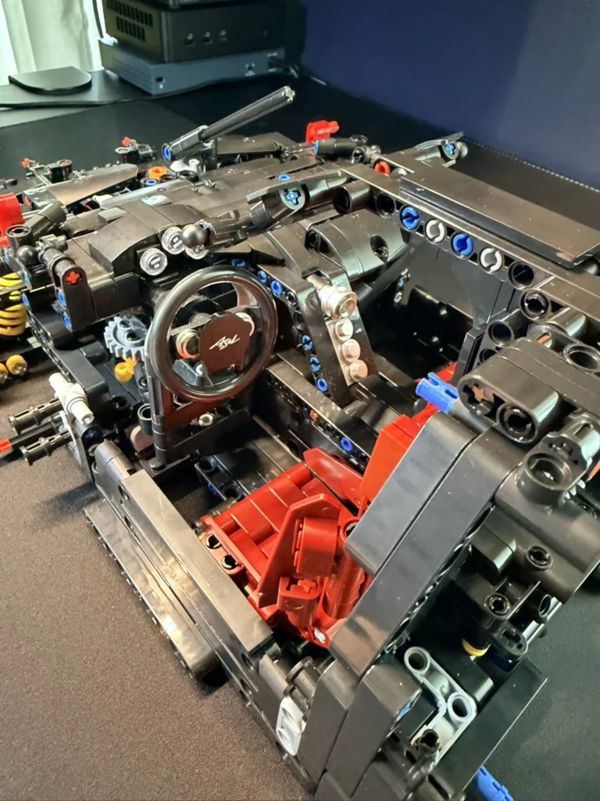
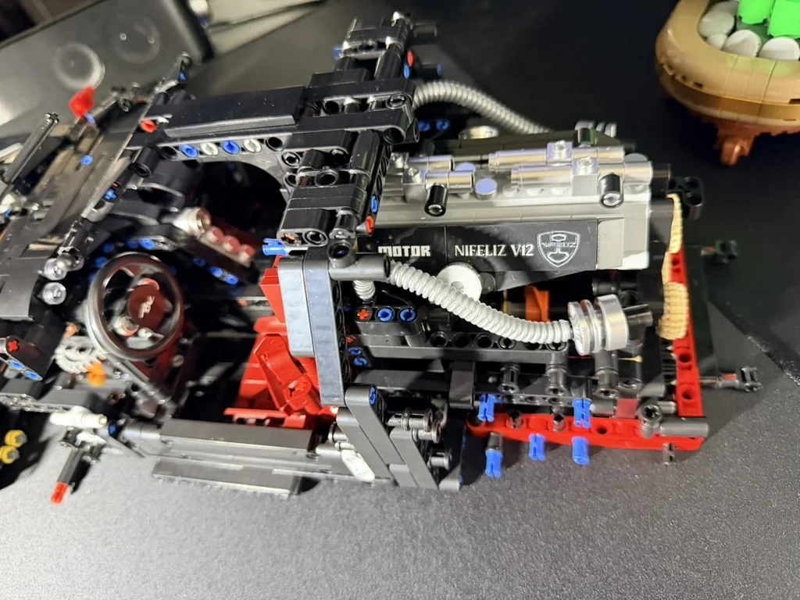
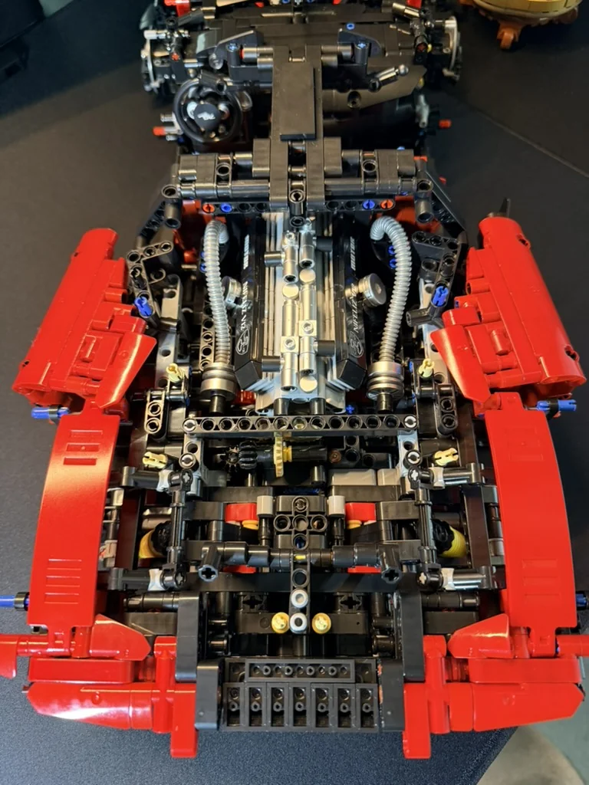
The red bodywork changes everything.
Once the exterior panels and wheels are installed, the exposed structure transforms into a large display model. Opening panels still reveal the mechanical work underneath.
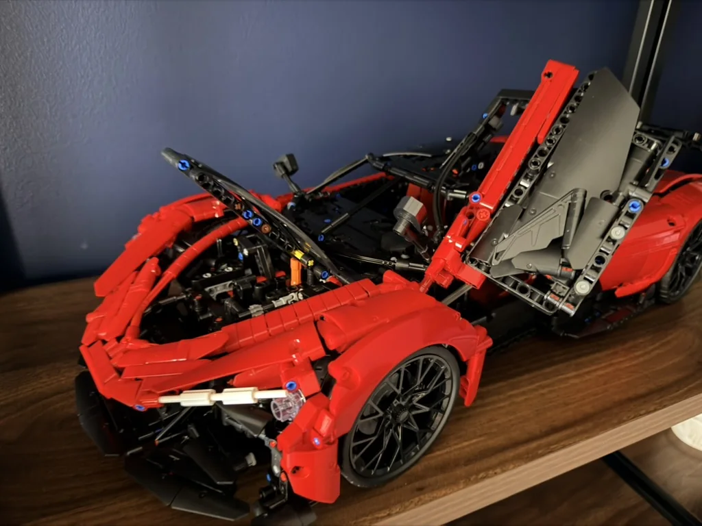
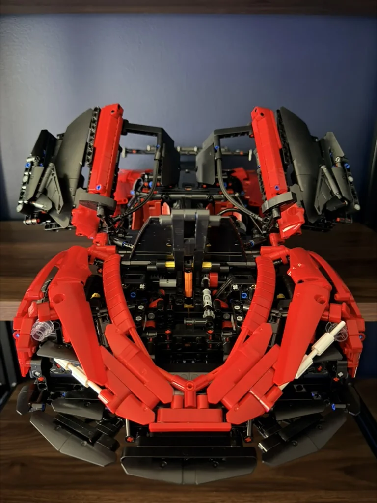
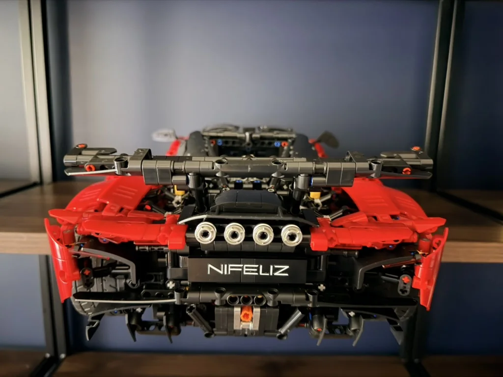
Challenging, fun and worth the build.
The Asil was a challenging and fun build, and the finished car looks really good on display. The mechanical layers make the build interesting throughout, while the scale and red bodywork give the completed model a strong shelf presence.
← Back to Builds